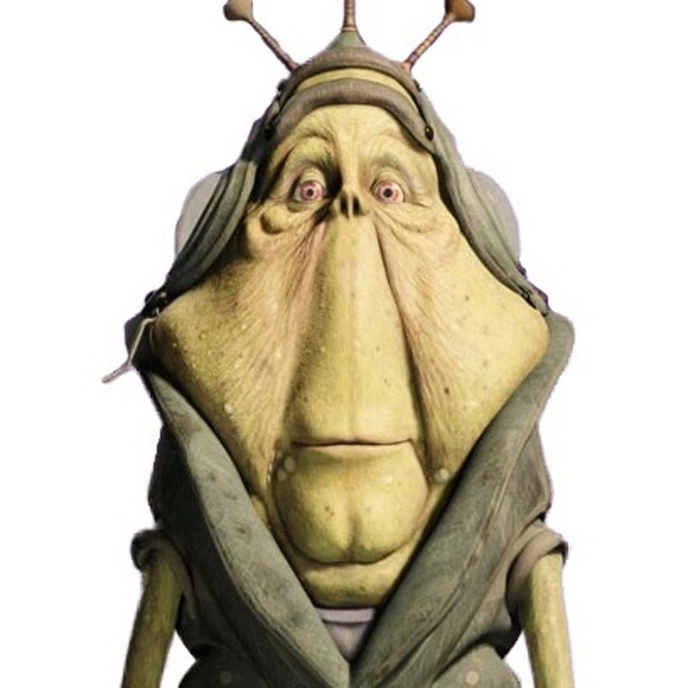

Top ten star wars characters

everyone loves star war,
but which of are the best characters? Some say dark vador, other say obi one kanobis,
but the real answer may shock you
these are the top 10 Star Wars characters
- Ben Quadinaros
- Hand Soap
- Dude Skywabber
- Quiet-Gone Gin
- Yoder

this is the best star war guy!!!